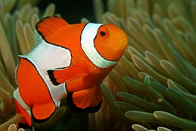

Trabalho
Carregar Imagem
Desfoque Gaussiano
Media
Mediana
Conversão NTSC
Conversão Media
Binarização
Virar 90º a direita
Virar 180º a direita
Virar 270º a direita
Virar 90º a esquerda
Virar 180º a esquerda
Virar 270º a esquerda
Redimensionar 4X
Redimensionar 2X
Redimensionar 1/2
Redimensionar 1/4
Original

Processed